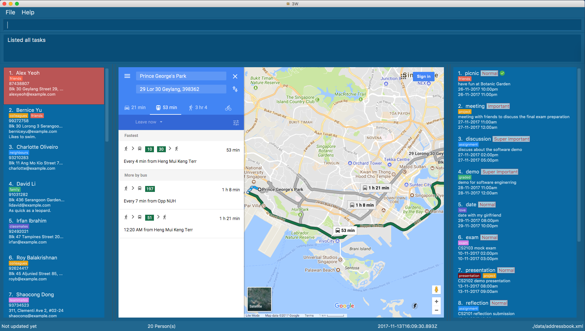

By: CS2103AUG2017-W15-B4 Since: Oct 2017 Licence: MIT
- 1. Welcome to 3W
- 2. Quick Start
- 3. Features
- 4. Coming in v2.0
- 4.1. Auto-focusing on input bar at the start of the application
- 4.2. Setting a task to be recurring
- 4.3. Listing tasks by tag
- 4.4. Viewing one task details with the relevant person in the addressbook
- 4.5. Viewing one person details with the relevant tasks displayed in the addressbook
- 4.6. Listing last few contacts the user have found
- 4.7. Pinning important contacts or task on top
- 4.8. Remindering region in task bar|see the reminder and be reminded of the deadline or the up comings of this task
- 4.9. Suggested possible new features
- 5. FAQ
- 6. Command Summary
1. Welcome to 3W
-
3W stands for "Who, What & Where". It is an application for University students, business people and all those who have a busy daily schedule.
-
3W stores information about your contact, your tasks, and build linkage between them for cross references.
-
3W supports map show for contact address and task venue with a Google map window.
-
3W bases on command line to interact.
-
Live neat with 3W.
1.1. Cool features
1.1.1. Routes Planning
3W uses google map functions to plan the routes to contacts' address.
Usage: Click the certain person(Or use the select command), then enter your current position in starting point
1.1.2. Contact&Task Linkage
3W support building linkage between contacts and tasks.
Usage: By a link command, refer to Link Operations for details.
2. Quick Start
-
Ensure you have Java version
1.8.0_60or later installed in your Computer.Having any Java 8 version is not enough.
This app will not work with earlier versions of Java 8. -
Download the latest
3W.jarhere. -
Copy the file to the folder you want to use as the home folder for your 3W app.
-
Double-click the file to start the app. The GUI should appear in a few seconds.
 -
Type the command in the command box and press Enter to execute it.
e.g. typinghelpand pressing Enter will open the help window. -
Some example commands you can try:
-
list: lists all contacts -
addn/John Doe p/98765432 e/johnd@example.com a/John street, block 123, #01-01: adds a contact namedJohn Doeto the Address Book -
addTaskn/picnic d/have fun at Botanic Garden s/6/12/2017 12:00pm f/6/12/2017 15:00pm t/social: adds a task namedpicnicto the Task Book -
delete3: deletes the 3rd contact shown in the current contact list -
markTask2: marks the 2nd task shown in the current task list and the marked task will disappear in task list -
undo: recover the contact deleted in the previous deletion -
deleteTask1: deletes the 1st contact shown in the current task list -
exit: exits the app
-
-
Refer to the Features section below for details of each command.
3. Features
Command Format
-
Words in
UPPER_CASEare the parameters to be supplied by the user e.g. inadd n/NAME,NAMEis a parameter which can be used asadd n/John Doe. -
Items in square brackets are optional e.g
n/NAME [t/TAG]can be used asn/John Doe t/friendor asn/John Doe. -
Items with
… after them can be used multiple times including zero times e.g.[t/TAG]…can be used ast/friend,t/friend t/familyetc. -
Parameters can be in any order e.g. if the command specifies
n/NAME p/PHONE_NUMBER,p/PHONE_NUMBER n/NAMEis also acceptable.
3.1. General Operation
3.1.1. Viewing help : help
Format: help/?
3.1.2. Listing entered commands : history
Lists all the commands that you have entered in reverse chronological order.
Format: history/h
|
Pressing the ↑ and ↓ arrows will display the previous and next input respectively in the command box. |
3.1.3. Undoing previous command : undo
Restores the address book and task book to the state before the previous undoable command was executed.
Format: undo/u
|
Undoable commands: those commands that modify the address book’s content ( |
Examples:
-
delete 1
list
undo(reverses thedelete 1command) -
select 1
list
undo
Theundocommand fails as there are no undoable commands executed previously. -
delete 1
clear
undo(reverses theclearcommand)
undo(reverses thedelete 1command)
3.1.4. Redoing the previously undone command : redo
Reverses the most recent undo command.
Format: redo/r
Examples:
-
delete 1
undo(reverses thedelete 1command)
redo(reapplies thedelete 1command) -
delete 1
redo
Theredocommand fails as there are noundocommands executed previously. -
delete 1
clear
undo(reverses theclearcommand)
undo(reverses thedelete 1command)
redo(reapplies thedelete 1command)
redo(reapplies theclearcommand)
3.1.5. Exiting the program : exit
Exits the program.
Format: exit/x
3.1.6. Saving the data
Address book data are saved in the hard disk automatically after any command that changes the data.
There is no need to save manually.
3.2. Contacts Operations
3.2.1. Adding a person: add
Adds a person to the address book
Format: add/a
Details: add n/NAME p/PHONE_NUMBER e/EMAIL a/ADDRESS [t/TAG]…
| A person can have any number of tags (including 0) |
Examples:
-
add n/John Doe p/98765432 e/johnd@example.com a/John street, block 123, #01-01 -
add n/Betsy Crowe t/friend e/betsycrowe@example.com a/Newgate Prison p/1234567 t/criminal
3.2.2. Listing all persons : list
Shows a list of all persons in the address book.
Format: list/l
3.2.3. Clearing all persons : clear
Clears all entries from the address book.
Format: clear/c
3.2.4. Locating persons by name: find
Finds persons whose names, email or address contain any of the given keywords.
Format: find/f
Details: find KEYWORD [MORE_KEYWORDS]
Examples:
-
find John
ReturnsjohnandJohn Doe -
find Betsy/Tim/John
Returns any person having namesBetsy,Tim, orJohn
3.2.5. Selecting a person : select
Selects the person identified by the index number used in the last person listing.
Format: select/s
Details: select INDEX
Examples:
-
list
select 2
Selects the 2nd person in the address book. -
find Betsy
select 1
Selects the 1st person in the results of thefindcommand.
3.2.6. Editing a person : edit
Edits an existing person in the address book.
Format: edit/ed
Details: edit INDEX [n/NAME] [p/PHONE] [e/EMAIL] [a/ADDRESS] [t/TAG]…
Examples:
-
edit 1 p/91234567 e/johndoe@example.com
Edits the phone number and email address of the 1st person to be91234567andjohndoe@example.comrespectively. -
edit 2 n/Betsy Crower t/
Edits the name of the 2nd person to beBetsy Crowerand clears all existing tags.
3.2.7. Exporting a person to a string of add command : export
Export the details of the person by the index number
Format: export/ex
Details: export INDEX
Examples:
-
export 1in the default setting
Returnsadd n/Alex Yeoh p/87438807 e/alexyeoh@example.com a/Blk 30 Geylang Street 29, #06-40 r/ t/friends
3.2.8. Adding/Updating remark of a person : remark
Adds a new remark or updates existing remark of a person
Format: remark/r
Details: remark 1 r/[remark]
Examples:
-
remark 1 r/likes to swim `
adds or updates remark of the first person to be `likes to swim -
remark 1
clear remark of the first person
3.3. Tasks Operations
3.3.1. Adding a new task : addTask
Adds a new task to the task book
Format: addTask/at
Details: addTask n/TaskName d/Description s/startDateTime f/finishDateTime c/priority [t/TAG]…
A task can have any number of tags (including 0), the tag mechanism is the same as that for person. A task has a special field called priority (ranges from 1 to 5, with 1 being the most important). If a priority is not specified during adding of this task, a normal (3) priority wil be set by default.
|
Examples:
-
addTask n/picnic d/have fun at Botanic Garden s/1/1/2017 12:00pm f/1/1/2017 15:00pm c/3 t/friends
3.3.2. Listing all tasks : listTask/
Shows a list of all tasks in the task book,including all completed tasks, which are with green click .
Format: listTask/lt
3.3.3. Clearing all tasks : clearTask
Clears all entries from the task book.
Format: clearTask/ct
3.3.4. Locating tasks by name: findTask
Finds tasks whose names or description contain any of the given keywords.
Format: findTask/ft
Details: find KEYWORD [MORE_KEYWORDS]
Examples:
-
find picnic
Returns any task having name/descriptionpicnic -
find picnic/meeting
Returns any task having name/descriptionpicnicormeeting==== Selecting a task :selectTask
Selects the task identified by the index number used in the last task listing.
Format: selectTask/st
Details: selectTask INDEX
Examples:
-
select 2
Selects the 2nd task in the task book.
3.3.5. Editing a new task : editTask
Edits an existing task in the address book
Format: editTask/edt
Details: editTask INDEX [n/TaskName] [d/Description] [s/startDateTime] [f/finishDateTime] [t/TAG]…
Examples:
-
editTask 1 n/picnic d/have fun at Botanic Garden s/1/1/2017 12:00pm f/1/1/2017 15:00pm t/friendsEdits the name, description, start time, finish time ad tag of the 1st task to bepicnic,have fun at Botanic Garden,1/1/2017 12:00pm,1/1/2017 15:00pmandfriendsrespectively. -
editTask 2 t/teammatesEdits the tag of the 2nd task to beteammatesonly and others remain same.
3.3.6. Exporting a task to a string of addTask command: exportTask
Export the details of the task by the index number
Format: exportTask/ept
Details: exportTask INDEX
Examples:
-
export 1in the default setting
Returns `addTask n/picnic d/have fun at Botanic Garden s/1/1/2099 12:00pm e/1/1/2099 15:00pm t/friends `
3.3.7. Deleting a task : deleteTask
Deletes the specific task from the task book.
Format: deleteTask/dt
Details: deleteTask IDNEX
Examples:
-
list -
deleteTask1
Deletes the 1st task in the task book.
3.3.8. Marking a task : markTask
Marks the specific task from the task book.
Format: markTask/mt
Details: markTask INDEX
Examples:
-
listTask -
markTask 1
Marks the 1st task in the task book to be completed and the marked task will disappear in the result list.
3.3.9. Setting a priority for a task : setPriority
Sets the priority field of a task that is already present in ths taskBook with an integer value between 1 to 5.
Format: setPriority/stp
Details: setPriority INDEX c/new value specified
Examples:
-
setPriority 1 c/1
Sets the priority of this task to beSuper Important. -
setPriority 1 c/6
A warning message is shown: A priority value is defined within integer range of 1 to 5.
3.3.10. Sorting tasks by their priority : taskByPriority
Sorts the task currently present in the taskBook by priority.
Format: taskByPriority/tbp
3.3.11. Sorting tasks by end date : taskbyend
Sorts the list of tasks by their end date
Format: taskByEnd/tbe
|
This sorting will not affect the order of the tasks currently in the storage. However, the current index shown will be the index used for a specific task to |
3.4. link Operations
3.4.1. link task with people: link
Linking a task with provided people
Format: link/lk
Details: link Index p/personIndex [p/personIndex]
Examples:
-
link 1 p/1
link task 1 with person 1 in the current displayed list -
link 1 p/1 p/2
link task 1 with person 1 and person 2 in the current displayed list
3.4.2. linked tasks of person: linkedTasks
Showing Linked tasks of provided person
Format: linkedTasks/lts
Details: `linkedTasks Index `
Examples:
-
linkedTasks 1
show linked tasks of person 1 in the current displayed list
3.4.3. linked tasks of person: linkedPersons
Showing Linked persons of provided task
Format: linkedPersons/lps
Details: `linkedPersons Index `
Examples:
-
linkedPersons 1
show linked persons of task 1 in the current displayed list
5. FAQ
Q: How do I transfer my data to another Computer?
A: Install the app in the other computer and overwrite the empty data file it creates with the file that contains the data of your previous Address Book folder.
6. Command Summary
-
Add
add n/NAME p/PHONE_NUMBER e/EMAIL a/ADDRESS [t/TAG]…
e.g.add n/James Ho p/22224444 e/jamesho@example.com a/123, Clementi Rd, 1234665 t/friend t/colleague -
Add Task
add n/NAME d/Description s/START TIME f/END TIME [t/TAG]…
e.g.addTask n/picnic d/have fun at Botanic Garden s/1/1/2099 12:00pm f/1/1/2099 15:00pm t/friends -
Clear :
clear -
Delete :
delete INDEX
e.g.delete 3 -
Delete Task :
deleteTask INDEX
e.g.deleteTask 3 -
Edit :
edit INDEX [n/NAME] [p/PHONE_NUMBER] [e/EMAIL] [a/ADDRESS] [t/TAG]…
e.g.edit 2 n/James Lee e/jameslee@example.com -
Edit Task :
editTask INDEX [n/NAME] [d/DESCRIPTION] [s/START_DATE_TIME] [f/END_DATE_TIME] [c/INTEGER[1~5] [t/TAG]…
e.g.editTask 1 n/picnic d/have fun at Botanic Garden s/1/1/2017 12:00pm f/1/1/2017 15:00pm t/friends -
Export :
export INDEX
e.g.export 3 -
Export Task :
exportTask INDEX
e.g.exportTask 3 -
Find :
find KEYWORD [MORE_KEYWORDS]
e.g.find James Jake -
Help :
help -
History :
history -
Link :
link TaskIndex p/personIndex [p/personIndex]… `
e.g. `link 1 p/2 -
List Contact :
list -
List Task :
listTask -
Mark Task :
markTask INDEX
e.g. markTask 1 -
Redo :
redo -
Remark :
remark INDEX r/[REMARK]
e.g. remark 1 r/Likes to swim. -
Select :
select INDEX
e.g.select 2 -
Select Task :
selectTask INDEX
e.g.selectTask 2 -
Set Priority :
setPriority INDEX c/PRIORITY INDEX
e.g.setPriority 1 c/2 -
Task By End :
taskByEnd -
Task By Priority :
taskByPriority -
Undo :
undo